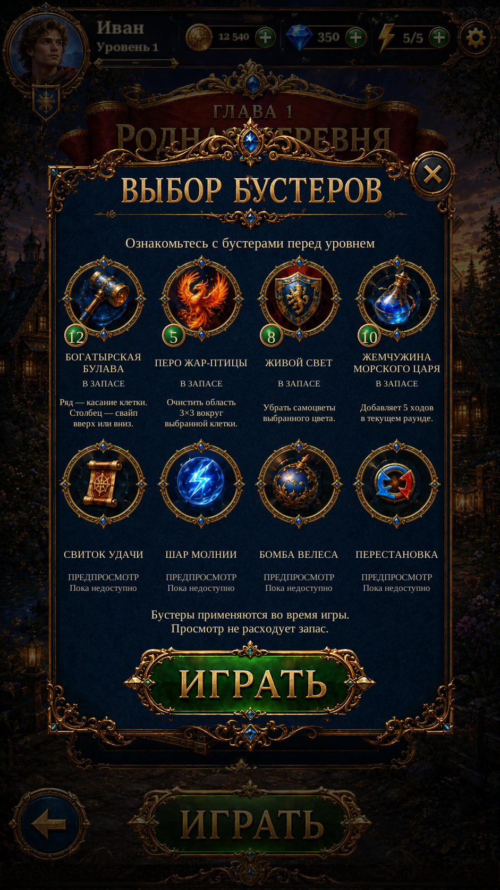

Booster Border Cleanup and Antique Gold R4Booster Border Cleanup and Antique Gold · R4
Removed original metal fragments retained inside the backing, including the right-hand ornament and inner arcs. All eight framed icons use the complete R3 rim with darker antique-gold shading matched to the original. Booster subjects are preserved.
Inspect original / isolated band / corrected icon · Report
Actual Unity captures. The original reference is labelled separately. Live badges remain independent from the icon art.
